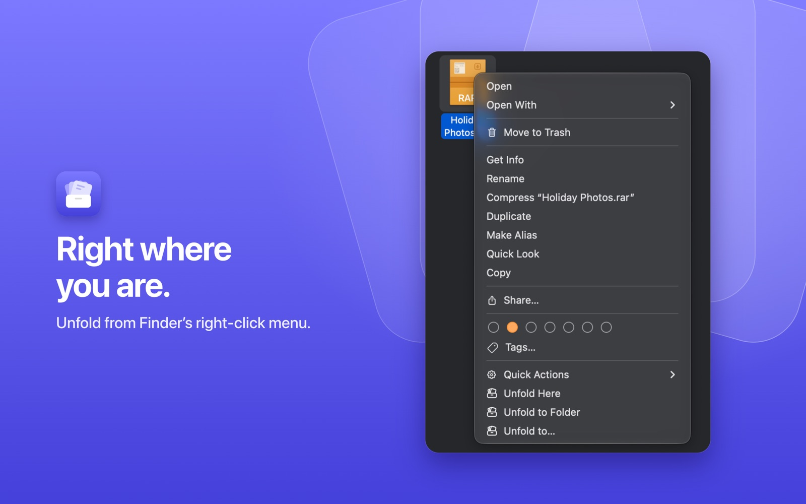
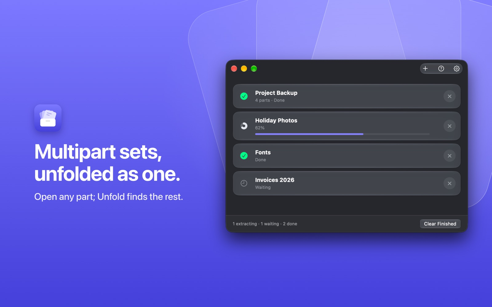
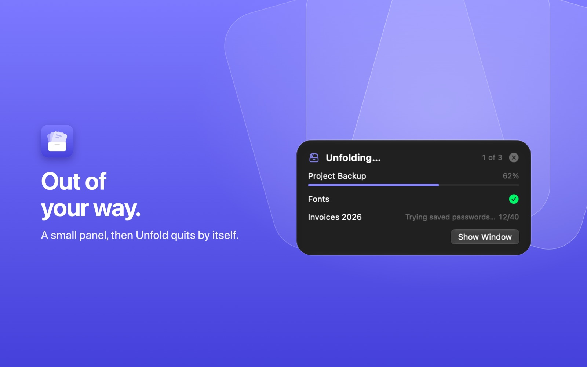
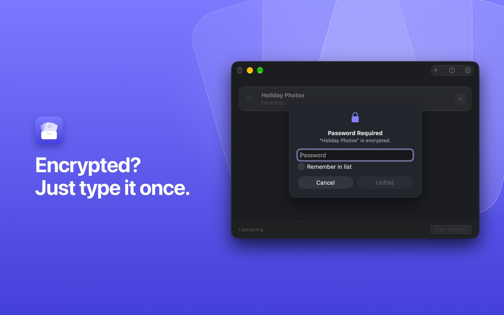
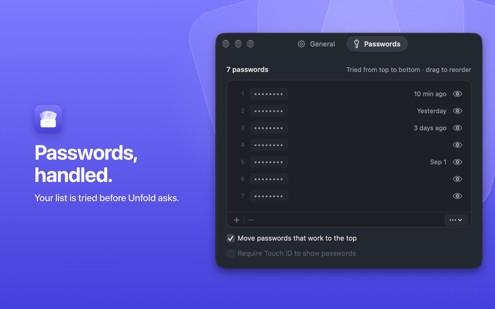
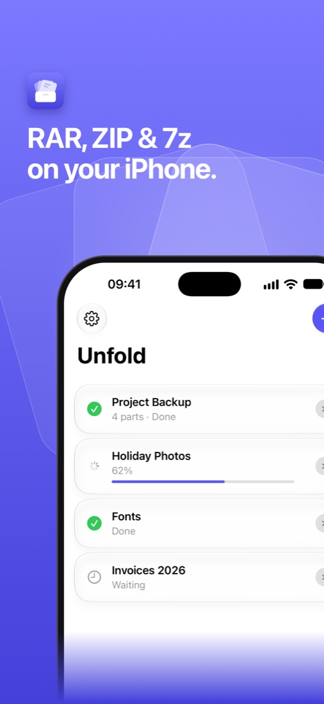
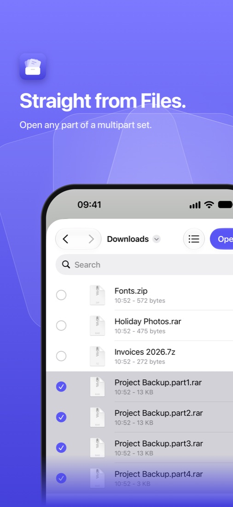
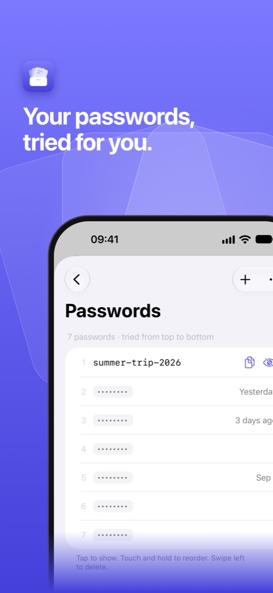

Unfold Guide
Mac · iPhone & iPad · Support & FAQ
Unfold extracts RAR, ZIP, 7z, TAR and many more formats. Multipart archives
(name.part1.rar, name.part2.rar …) unfold as one, whichever part you open.
Mac
1. The first start
The welcome screen asks once for access to your home folder. macOS only lets apps into folders you allow, and Unfold needs the archive's folder to find the other parts of a multipart set and to save next to it. Allowing your home folder covers Downloads, Desktop and Documents. “Not Now” works too; Unfold then asks per folder when it needs one. Open the welcome screen again with ? in the main window or in Settings › About › Help.
2. Unfold from Finder

Right-click an archive (or several) in Finder:
- Unfold Here puts the contents next to the archive.
- Unfold to Folder puts them into a new folder named after the archive.
- Unfold to… asks where.
The menu needs Unfold's Finder extension: System Settings › General › Login Items & Extensions › Finder › Unfold. Without it, the same is under right-click › Quick Actions › Unfold.
3. Double-click, drop, or open

Double-click an archive, drop archives on the Unfold window, or click +. Each archive or multipart set is one row with its progress. A set of four parts shows as one row (“4 parts”). Clear Finished tidies the list.
Where the files go when you double-click or drop is set in Settings › General › Opening an archive. The default, Unfold to Folder when needed, puts a single item right next to the archive and several items into a folder named after it, so you never get loose files everywhere or a folder with just one folder inside.
4. Out of your way

Started from Finder or by a double-click, Unfold only shows a small progress panel and quits a few seconds after it's done. To keep it running, open the main window or turn on Settings › General › Keep Unfold open after extracting.
5. Encrypted archives

When an archive needs a password, Unfold asks. Tick Remember in list to save it for next time.
6. Your password list

In Settings › Passwords you keep passwords you use often. For an encrypted archive, Unfold tries them from top to bottom before asking and moves the one that worked to the top. Add with +, drag to reorder, click the eye or press Space to reveal one. The list is stored in your Keychain.
7. Settings
- General: where archives go, open the folder afterwards, move the archive to the Trash after success, keep Unfold open, make Unfold the default app for archives, and the folders Unfold may use.
- Passwords: the list above.
- About: version and updates, this guide, support and the third-party licenses.
8. Shortcuts
The Shortcuts action Unfold Archives takes files and returns the extracted folders, for your own automations.
iPhone & iPad


1. Open an archive
- Tap + in Unfold and pick an archive in Files. For a multipart set, select all its parts.
- Or, in Files, Mail, Safari or any other app: Share › Unfold.
The files appear next to the archive in Files. If that folder can't be written to (for example an attachment), they go to On My iPhone › Unfold (On My iPad on iPad).

2. Passwords
Encrypted archive? Type the password once; Remember in list saves it. Your list is in Settings (gear, top left) › Passwords, and Unfold tries it before asking.
3. Settings
The gear at the top left: where archives go, your passwords, and links to this guide and support.
4. Shortcuts
Unfold Archives is available in the Shortcuts app as well.
Didn't find what you need? See Support & FAQ or write to hello3x2@outlook.de.
Unfold is free. If it saves you time, you can buy me a coffee ☕ on Ko-fi.